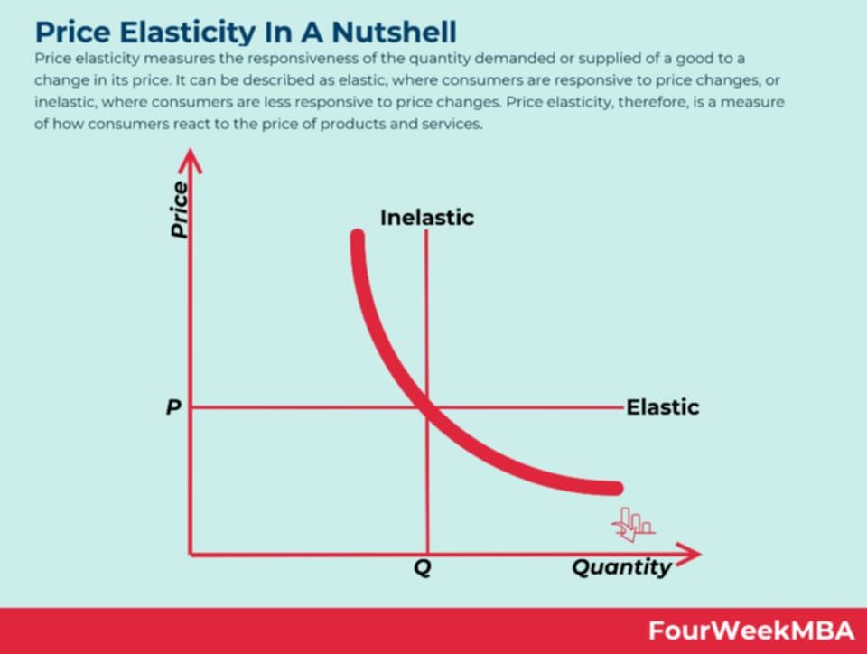
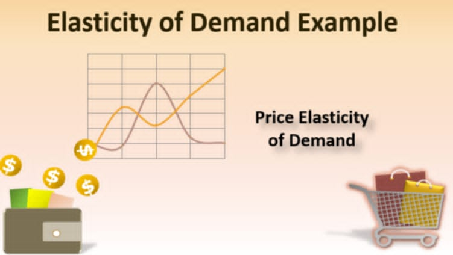
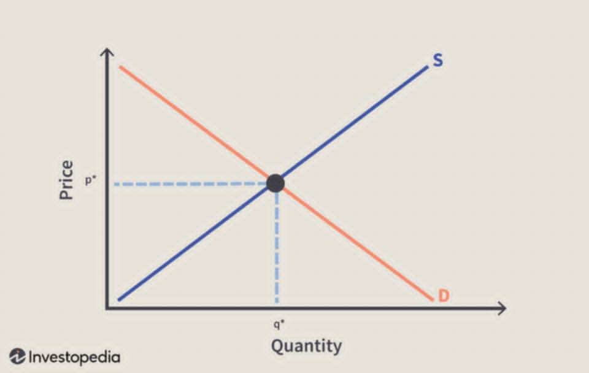
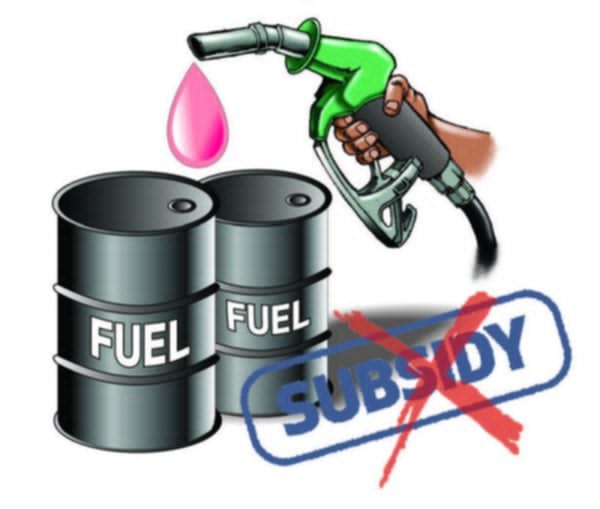

YUNIT II – MGA BATAYANG KONSEPTO NG EKONOMIKS
Sa Yunit II ng Araling Panlipunan 9, tatalakayin ang mga pangunahing konsepto ng ekonomiks: demand, supply, presyo, pamilihan, at papel ng pamahalaan. Nakabatay ito sa MELC upang matulungan ang mag-aaral na maunawaan ang galaw ng ekonomiya sa araw-araw.
Aralin 1 – Demand
Kahulugan ng Demand:
Ang Demand ay dami ng produkto o serbisyo na nais at kayang bilhin ng mamimili sa iba’t ibang presyo sa takdang panahon.
- Batas ng Demand – kapag tumataas ang presyo, bumababa ang demand at vice versa.
- Income at Substitution Effect – epekto ng kita at alternatibong produkto sa demand.
- Mga Salik na Nakaaapekto sa Demand – kita, panlasa, presyo ng kaugnay na produkto, ekspektasyon, populasyon.
Aralin 2 – Supply
Kahulugan ng Supply:
Ang Supply ay dami ng produkto o serbisyo na handang ipagbili ng prodyuser sa iba’t ibang presyo sa takdang panahon.
- Batas ng Supply – tumataas ang supply kapag tumataas ang presyo.
- Direktang relasyon ng presyo at dami ng supply.
- Mga Salik ng Supply – presyo, teknolohiya, presyo ng ibang produkto, ekspektasyon, bilang ng prodyuser.
Aralin 3 – Price Elasticity


Kahulugan ng Price Elasticity:
Ang Price Elasticity ay sumusukat kung gaano kalaki ang pagbabago sa demand o supply kapag may pagbabago sa presyo ng produkto.
- Elastic Demand – sensitibo sa pagbabago ng presyo.
- Inelastic Demand – hindi gaanong naapektuhan ng presyo.
- Unitary Elasticity – proporsyonal ang pagbabago sa presyo at demand.
Aralin 4 – Market Equilibrium

Kahulugan ng Market Equilibrium:
Ang Market Equilibrium ay estado kung saan magkapantay ang dami ng demand at supply sa isang presyo.
- Presyong Ekwilibriyo – presyo kung saan pantay ang demand at supply.
- Surplus – sobra ang supply kumpara sa demand.
- Shortage – kulang ang supply kumpara sa demand.
Aralin 5 – Iba’t Ibang Estruktura ng Pamilihan

Kahulugan ng Estruktura ng Pamilihan:
Batay sa bilang ng prodyuser, uri ng produkto, at antas ng kompetisyon:
- Ganap na Kompetisyon – maraming prodyuser, pare-parehong produkto, malaya ang presyo.
- Monopolyo – iisang prodyuser ang nagkokontrol ng produkto at presyo.
- Monopsonyo – iisang mamimili ang kumokontrol sa presyo o demand.
- Oligopolyo – ilang prodyuser ang kumokontrol sa presyo at supply.
Aralin 6 – Bahaging Ginagampanan ng Pamahalaan sa Regulasyon ng mga Gawain Pang-ekonomiya

Kahulugan ng Papel ng Pamahalaan:
Ang pamahalaan ay may mahalagang papel sa pagpapanatili ng kaayusan sa ekonomiya upang maprotektahan ang mamimili at prodyuser.
- Regulasyon – pagpapatupad ng batas upang mapanatili ang patas na kalakalan.
- Subsidy – tulong pinansyal sa mga prodyuser o mamimili.
- Taxation – pangongolekta ng buwis para sa mga proyekto at serbisyo.